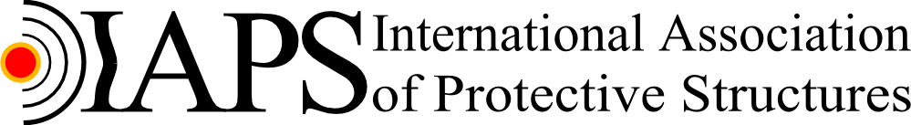

The University of Manchester
Universität der Bundeswehr München
The University of Newcastle
Tianjin Chengjian University
Poznań University of Technology
The University of Manchester
Universität der Bundeswehr München
The University of Newcastle
Tianjin Chengjian University
Poznań University of Technology
The International Association of Protective Structures (IAPS) has been formed for the purpose of promoting research and development associated with Protective Structures in Civil Engineering. Primary objectives are: bringing experts together working in the field of PS, being the umbrella for different actions, establishing an International Conference on Protective Structures (ICPS) to be held every two years, promotion of other professional activities, and support the publications of the International Journal of Protective Structures (IJPS). ICPS will address all relevant aspects of the subject of protective structures of the built environment, including structural mechanics, soil mechanics, traffic engineering, waterways as well as safety studies and risk analysis in both research and practice. Authors are encouraged to submit updated papers to the International Journal of Protective Structures, which is well known as the only Journal on Protective Structures worldwide.
Yours sincerely,
IAPS President:
Prof. Dr.-Ing. Norbert Gebbeken
Universität der Bundeswehr München
Institut für Mechanik und Statik / Labor für Ingenieurinformatik
Professur für Baustatik
Werner-Heisenberg-Weg 39
85577 Neubiberg
